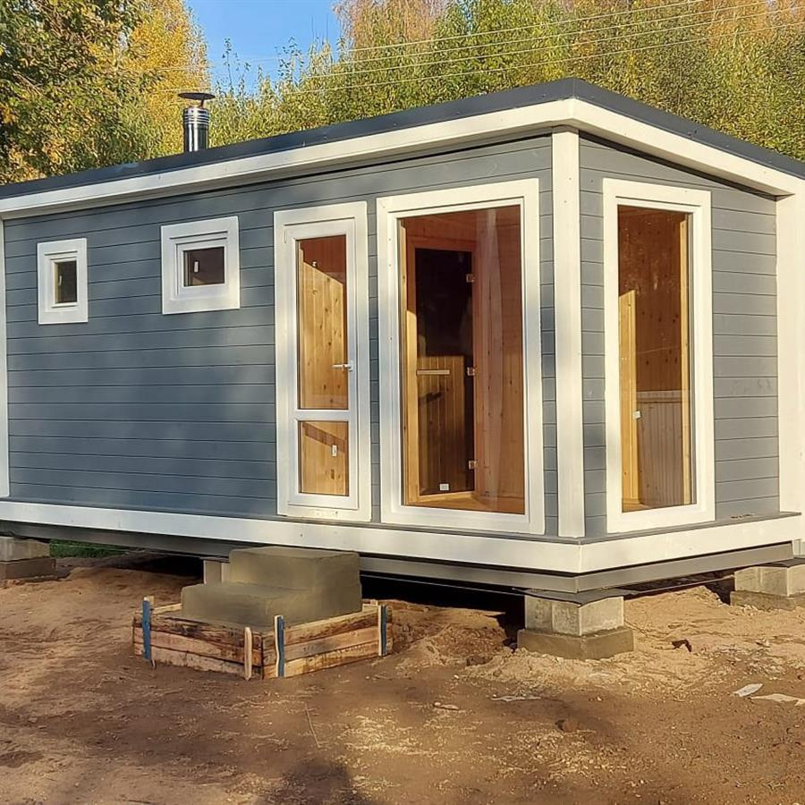
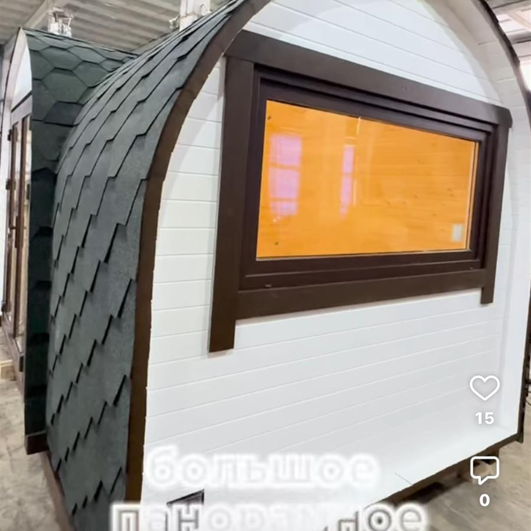
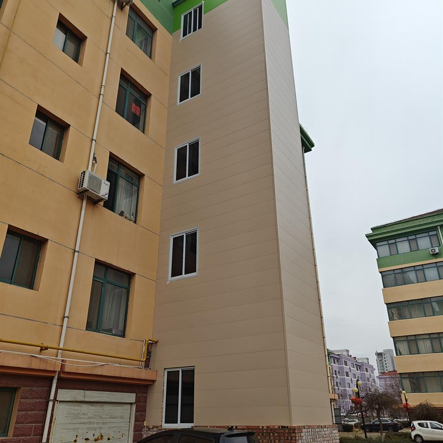
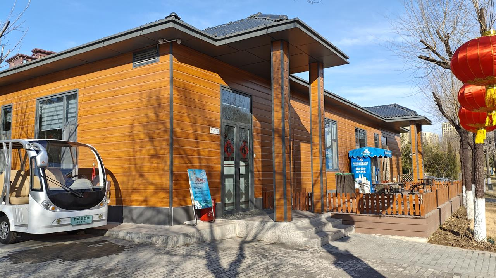

Baseline and receiving
Establishes the lower receiving condition and the first alignment datum.
Accessories & Trim Systems
Accessory systems organize vulnerable transitions: starts, joints, corners, openings, terminations, edges, and facade plane changes.
Accessories convert panel fields into a complete facade system. They guide panel starts, protect exposed ends, organize joints, support waterproof sequencing, and reduce site improvisation.
Establishes the lower receiving condition and the first alignment datum.
Controls board-to-board rhythm and reduces exposed field gaps.
Protects cut edges and coordinates facade continuity at wall turns.
Supports edge closure around water-sensitive openings and penetrations.
Use this category as part of a complete exterior system review. Each topic should identify the controlled behavior, the workflow stage, the risk condition, and the verification point.
Define whether the page controls water, heat, load, geometry, surface protection, manufacturing consistency, or site workflow.
Locate the control point in design, production, loading, storage, cutting, installation, or inspection.
Identify joints, corners, openings, cut edges, fasteners, support spans, coatings, packaging, or substrate transitions.
Use drawings, diagrams, site photos, QC images, installation frames, loading records, or final inspection notes.
Practical Workflow
Trims must be planned before panels are fixed, because they define receiving conditions and closure direction.
Mark starts, corners, joints, openings, and terminations.
Install starter and other required receiving trims in correct order.
Use corner, opening, and finishing trims to protect exposed cuts.
Check alignment, overlap direction, drainage, and visual rhythm.
Show starter, connector, corner, finish, window, and door trims in one facade plane.
Show edge protection, overlap direction, and water-sensitive trim interfaces.
Technical subpages for detail-level engineering logic, failure conditions, checkpoints, and evidence embedding.
This category should be read as part of the connected exterior system, not as an isolated topic.
Trims define receiving, alignment, closure, and inspection sequence.
Trim order controls water path direction at starts, joints, corners, and openings.
Edges, interlock, and backing need trim protection at terminations.
Future diagrams, installation frames, QC images, and project details should validate this relationship.
Future evidence should document real system behavior. These slots are reserved for technical visuals, not decorative images.

DiagramSystem detail, control layer, sequencing, or load/water/thermal path drawing.

Field FrameInstallation, handling, storage, cutting, cleaning, or inspection photo frame.

QC RecordFactory, packaging, dimensional, surface, or loading verification image.

Project DetailBuilt facade condition showing corner, opening, trim, drainage, or panel continuity.
Engineering documentation should describe how workflows break, where risk concentrates, and what must be checked before the next step proceeds.
Water control depends on overlap, drainage exits, flashing, drying paths, and sequencing. Do not block intended exits.
Joints, fasteners, trims, openings, cuts, and damaged cores can interrupt insulation continuity.
Metal filings must be removed from coated surfaces and cut edges before moisture exposure.
Wide pallet spacing or uneven supports can deform long panels under their own weight.
Reverse-lap sequencing can direct water behind the cladding instead of outward.
Verify the control point before moving to the next stage: seat, fix, close, drain, clean, inspect.
No. They support alignment, closure, protection, and water-management sequencing.
Some closures happen late, but receiving and transition logic should be planned early.
Incorrect order can create exposed gaps, reverse laps, or blocked drainage.
No. Openings and penetrations still require project-specific flashing logic.